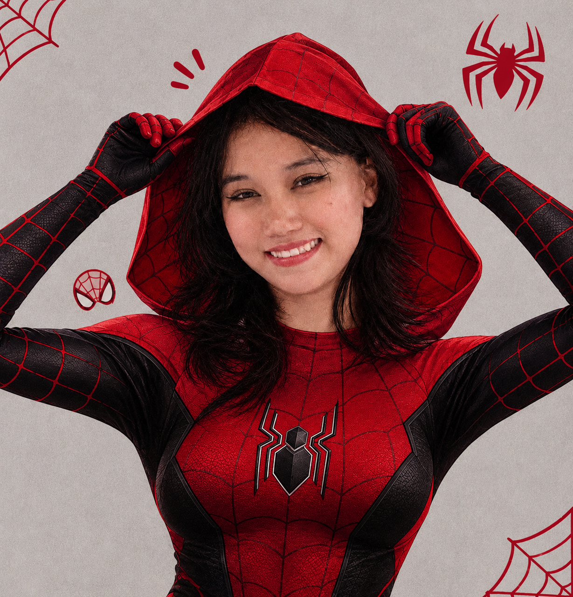

Wife & Wife ♥
"I will hold your hand whenever I feel their eyes on us."
01 / IMPORTANT TO ME
DANICA SHANE M. AGRIPA
BS COMPUTER SCIENCE 1B
WELCOME TO MY LITTLE WORLD
WHEN THE TIME IS RIGHT, I, THE LORD, WILL MAKE IT HAPPEN.
A little space filled with my stories, interests, dreams, and the things that make me who I am.
A LITTLE ABOUT MYSELF
Hey, I'm Danica, but you can just simply call me by my surname, Agripa.
Not Batman, not Iron man, but a first-year Bachelor of Science in Computer Science
student at Bicol University— and yes, a Spider Woman too! A person with big dreams and an even bigger determination to pursue them.
I believe that if you truly want something, you must have the courage to work for it. Never let people who have
never dared to try dictate how far you can go, because the mindset of those who strive for
success is worlds apart from those who never take the first step.
I firmly believe that God would never place a dream in your heart without a reason.
And as long as that dream remains in me, I will keep believing, learning, growing,
and working towards making it a reality.
GET TO KNOW ME
“Live as if you were to die tomorrow. Learn as if you were to live forever.”
— Mahatma Gandhi
A woman who lives her whole life trying to prove everyone that she was good enough, chasing
academic validation endlessly, has already learned that there are so much more than that. There
are so much more to life outside the academic life. There are stories to read, places to go,
music to hear, people to love, and experiences that teach lesson no classroom ever could.
You're not just studying for grades; you're studying for the life you want to build. And along the way, don't forget to actually live it.
Be ambitious, but don't let ambition keep you from experiencing life. Learn endlessly, dream fearlessly, and remember that you are already more than enough, even without having to prove it.
HOW IT STARTED
I chose Computer Science partly because I see it as a practical course that can lead to career opportunities and financial stability. I want to build a future where I can support myself and work toward the life I hope to have. I also know that studying computing will challenge me. There will be difficult lessons, unfamiliar concepts, and problems that require patience.
Even with those challenges, I want to understand how technology works and how people use it to solve problems. I am beginning this journey with a lot to learn, and I hope to become more confident through practice and experience.
Every line of code brings me one step closer to the future I envision.

It's okay, I'm Spider-woman.
HOVER OR FOCUS TO REVEAL ♥FAVORITES
"I will hold your hand whenever I feel their eyes on us."
01 / IMPORTANT TO ME" "For me, I know nothing about certainty, but the sight of the stars makes me dream."
01 / IMPORTANT TO MEA LITTLE MORE ABOUT ME
| Category | A Little About Me |
|---|---|
| Personality | Ambivert, talkative when comfortable, and a little too sensitive for this world. |
| Mindset | "I don't chase, I attract." I believe in letting things come naturally. |
| Routine | Going to class, coding, and jogging |
| Favorite Interest | Jellyfish and Stars! |
| Zodiac Sign | Aquarius |
| Social Life | I prefer a small circle of friends who are genuinely supportive. |
| Sports | Volleyball |
| Academic Life | A love-hate relationship with computer science. |
| Likes | Travel, hiking, makeups, coffee, books |
| Favorite animals | Dogs and Cats |
LOOKING AHEAD
The goal is to become the best version of myself and build a life that I can genuinely be proud of— not just a successful life, but a meaningful and fulfilling one. I hope that everything I am working so hard for today will someday be worth it. I hope that the sacrifices, sleepless nights, quiet struggles, and moments of self-doubt will lead me somewhere beautiful. I want to reach a point in my life where I can look back and be grateful that I never gave up on the dreams I once prayed for. I want to be financially stable, not just so I can afford the things I want, but so I can give my family, especially my mother, the comfortable and peaceful life they deserve. I want to give back to the people who have supported me, make life a little easier for them, and allow my mother to enjoy the things she may have once set aside for our sake. I want to become someone who can provide without constantly worrying about what tomorrow might bring.
Beyond financial success, I want to experience life in its fullest sense. I want to travel to places I've only ever dreamed of, read countless books, discover new passions, listen to beautiful music, meet different kinds of people, and collect memories that remind me how wonderful it is to be alive. I want to grow intellectually, emotionally, and spiritually. I want to become wiser, kinder, more independent, and more courageous. Most importantly, I hope I never become so consumed by chasing success that I forget to appreciate the life I am living along the way. I don't want to spend my entire youth preparing for a future while forgetting to enjoy the present. I want to work hard for my dreams, but I also want to make room for happiness, meaningful relationships, spontaneous adventures, and the little things that make life beautiful.
I want a life where I am successful but still grounded, ambitious but still content, independent but never too proud to appreciate the people who helped me get there. At the end of the day, I don't just want to make a living; I want to make a life worth living. A life where my younger self would feel proud, my mother would feel at ease, and my future self would be grateful that I chose to keep going.
And I hope that someday, all the things I once wished for will become the life I get to wake up to every day.
LOOKING BACK
Working on this page helped me realize that an About Me website is not just about sharing basic facts about myself. It is also a way to express who I am, what I enjoy, and a little bit of my personality through words, pictures, colors, and design. Compared to my first About Me activity, I feel like I improved in organizing my ideas, making each section clearer, and choosing a design that better represents me. I also realized how much I enjoy coding, even though it can be stressful and challenging at times. Whenever I encounter something I don't understand, I try to research it and find a solution. However, researching one problem just leads me to another problem that I have to figure out, haha. There were moments when I got annoyed because I couldn't figure out how to make everything look or work perfectly. Honestly, I think I was even more irritated with BBM than with the actual coding process. Despite the difficulties, I find it fun and rewarding whenever I get things to work the way I want them to. This activity helped me become more creative and understand how small design choices can make a website feel more personal and unique.